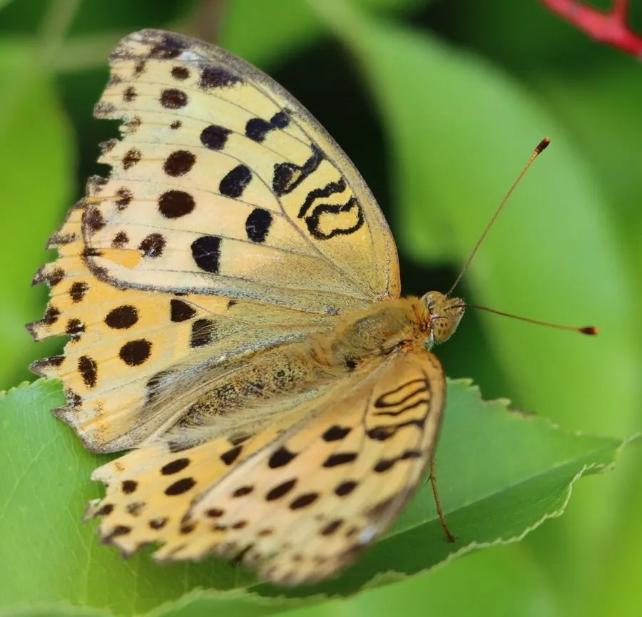

昆虫 · 动物界
老豹蛱蝶 Argyronome laodice

翅面橙黄带黑色豹纹的一种中型蛱蝶，幼虫取食堇菜科植物，中国和东亚地区山地草甸常见，喜访花吸蜜。
- 分类
- 门节肢动物门纲昆虫纲目鳞翅目科蛱蝶科属豹蛱蝶属
- 栖息环境
- 山地草甸、林缘、路旁与溪谷，堇菜科植物附近
- 地理分布
- 中国大部分地区、日本和朝鲜半岛
- 保护级别
- 暂无评估
物种志
老豹蛱蝶翅展约 5.5–6.5 cm，翅面橙黄色，布满黑色斑点和条纹，形似豹纹；前翅外缘和后翅边缘有黑色带，翅腹面颜色较淡，有褐色和白色的斑纹。雌蝶的豹纹通常更发达，雄蝶翅面更偏橙黄。
它生活在山地草甸、林缘、路旁和溪谷，成虫飞行迅速，喜欢访花吸蜜，也常在湿地吸水。雌蝶把卵产在堇菜科植物的附近，幼虫取食紫花地丁等叶片，身体带刺毛。老豹蛱蝶一年发生一代或多代，以幼虫或蛹越冬，分布于中国大部分地区、日本和朝鲜半岛。它是山地草甸中常见的豹蛱蝶，豹纹和橙黄的配色在阳光下非常醒目，也是生态摄影的常见题材。它的蛹为褐色，挂在草丛中。
形态与习性
- 食性幼虫取食紫花地丁等堇菜科植物；成虫吸蜜
- 翅展约 5.5–6.5 cm
- 识别翅面橙黄带豹纹状黑斑
- 生活史一年发生一代或多代，以幼虫或蛹越冬
- 分布中国大部分地区、日本和朝鲜半岛
趣味知识
- 老豹蛱蝶翅面的黑色斑点排列如豹纹，因此得名。
- 它喜欢在山地草甸的花丛间快速飞行。
- 幼虫取食堇菜科植物，常藏在草丛基部。